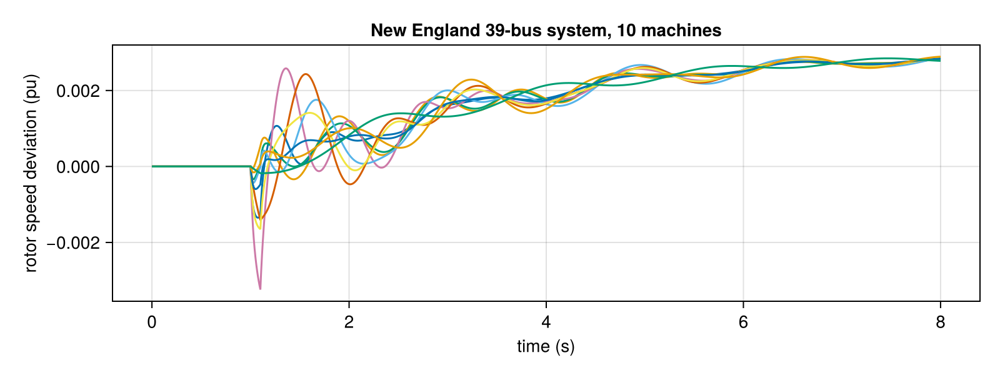

GradPower.jl
Power-system dynamic simulation in Julia, on CPU and GPU, from standard PSS/E files.
GradPower reads a power network (.raw) and its dynamic models (.dyr), solves the power flow, and integrates the differential-algebraic equations (DAE) of the whole system through faults, line trips, generator and load outages, and load changes. It is built to run many simulations: scenarios can be batched on CPU threads or on an NVIDIA GPU, and the output can be reduced to exactly what a study or a machine-learning dataset needs.
using GradPower, CairoMakie
ex = joinpath(pkgdir(GradPower), "examples")
sys = from_psse(joinpath(ex, "IEEE39.raw"), joinpath(ex, "IEEE39_gov.dyr"))
build_network!(sys); runpf!(sys)
dp = DynamicProblem(sys); initialize_dynamics!(dp, sys)
# 100 ms three-phase fault at bus 16, then simulate 8 s
add_event!(sys, ContingencyEvent(sys.busmap[16], 0.01, 1.0, 1.1))
t, traj = integrate!(dp, sys, 8.0)
fig = Figure(size = (800, 300))
ax = Axis(fig[1, 1], xlabel = "time (s)", ylabel = "rotor speed deviation (pu)",
title = "New England 39-bus system, 10 machines")
for i in GradPower.gen_speeds(sys)
lines!(ax, t, traj[i, :])
end
fig
What you can do
| Simulate | Fault-on / fault-off transients with GENROU machines, governors, exciters and stabilizers (First simulation). |
| Disturb | Resistive or impedance faults, line trips with circuit ids, generator trips (with their controllers), load trips and load steps (Contingencies and events). |
| Scale out | Run many scenarios in one call on CPU threads or the GPU (Many scenarios at once, Linear solvers and GPU). |
| Choose accuracy | Backward Euler or second-order Crank–Nicolson, with Jacobian reuse and a predictor (Integrators). |
| Store less | Record only some states, every k-th step, in Float32; stop unstable runs early (Recording and early stop). |
| Build datasets | Sweep loads × faults and write labelled HDF5 files for training (Generating training data). |
Installation
GradPower is not registered yet. From the Julia REPL:
pkg> add https://github.com/dynsytms/GradPower.jlFor the GPU path also add CUDA and CUDSS (see Linear solvers and GPU).
Where to start
- First simulation: the five steps of every study.
- Reading the results: where every quantity lives in the output.
- Contingencies and events: everything you can schedule.
- How it works: the equations and the numerical method, for the curious.
The bundled test systems live in the examples/ folder of the package: 2bus, ieee9_v33 (WSCC 9-bus) and IEEE39 (New England), with several .dyr variants (governors, exciters, stabilizers).